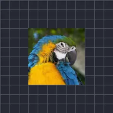

ラスター変換

上のエフェクトを適用した後のレイヤーの仕上がり画像を、拡大縮小・回転・移動します。塗りは元の画像を下に残し、レイヤーにマスクは結果を元の形状内に収めます。
設定
| 設定項目 | 種類 | 範囲 | デフォルト |
|---|---|---|---|
| スケール | 数値 | 0.01〜50 | 1 |
| 角度 | 角度 | -3600°〜3600° | 0° |
| オフセット | ポイント（X, Y） | -5000 px〜5000 px | 0 px, 0 px |
| レイヤーにマスク | オン／オフ | – | オフ |
| アルファ | 数値 | 0%〜100% | 100% |
| 塗り | 数値 | 0%〜100% | 0% |
| サンプリング | 選択 | ニアレスト、リニア | リニア |